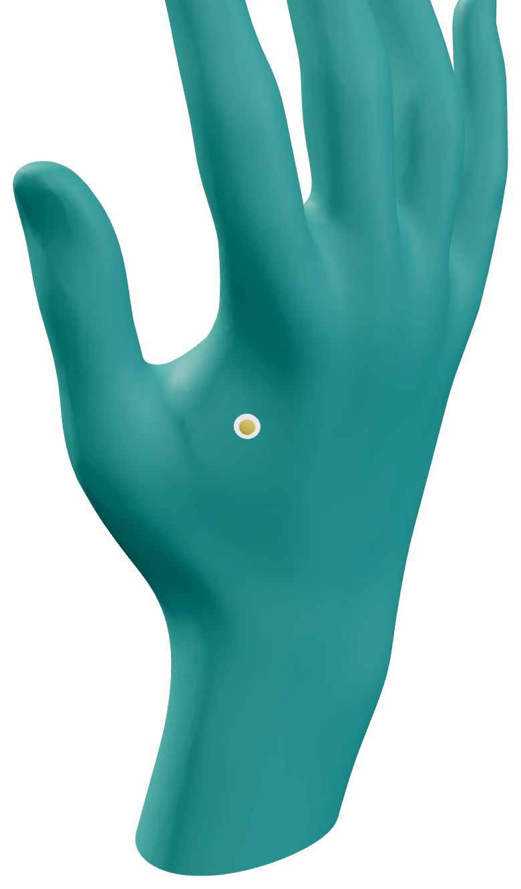
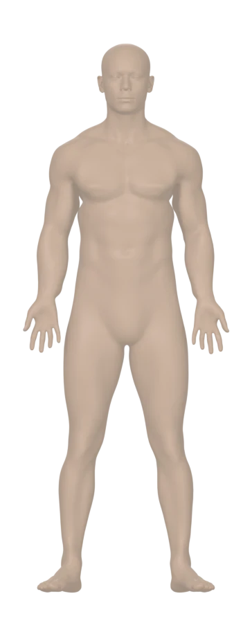
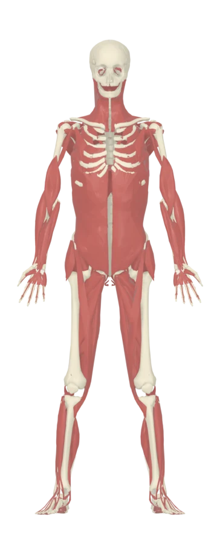
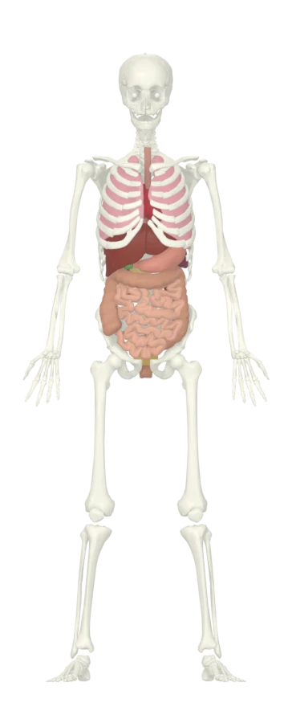

طب سوزنی چینی ۳۶۱ نقطه
مریدینها و نقاط کل بدن، با مسیر هر مریدین و مقالهٔ آن.
با مدل سهبعدی بدن، تمام نقاط، مکاتب و منابع معتبر در یک مجموعهٔ کامل.

طب سوزنی • دانش • دقت • سلامت
۳۶۱ نقطهٔ طب سوزنی چینی روی ۱۴ مریدین، هر کدام در جای خودش روی مدل سهبعدی بدن و با همهٔ جزئیاتی که برای پیدا کردن و کار با نقطه لازم است.




علاوه بر طب سوزنی چینی، نقشههای مکاتب دیگر هم هر کدام بخش جدای خود را دارند.
مریدینها و نقاط کل بدن، با مسیر هر مریدین و مقالهٔ آن.
نقاط اختصاصی مکتب تانگ روی دست، پا و بدن.
نقشههای دست و پا و نقاط متناظر بدن.
نواحی و خطهای طب سوزنی سر روی مدل سر.
نقشهٔ گوش برای اوریکولوتراپی، روی مدل سهبعدی گوش.
نقشههای طب سوزنی شکم و ناف.
نام بیماری یا نشانه را به فارسی جستوجو کنید تا نقاط و نواحی مرتبط با آن، با توضیح هر کدام، روی بدن نشان داده شوند.
محتوای بیماریها آموزشی است و جایگزین تشخیص و درمان پزشک نیست.
بدن را با یک انگشت یا موس بچرخانید و روی هر ناحیه نزدیک شوید.
با نام فارسی، نام چینی، کد نقطه (مثل LI4) یا نام بیماری.
روی صفحهٔ گوشی نصب و مثل اپ باز میشود؛ روی رایانه هم در مرورگر.
بدون هزینه
بخشی از نقاط با همهٔ جزئیات
شروعبهزودی
دسترسی کامل به همهٔ بخشها
هماهنگی خریدبهزودی
دسترسی کامل به همهٔ بخشها
هماهنگی خریداطلس برای پزشکان، دانشجویان و علاقهمندان طب سوزنی ساخته شده تا هر نقطه را بهجای تصویر کتاب، روی مدل سهبعدی بدن ببینند: طب سوزنی چینی، مستر تانگ، سوجوک، اسکالپ، گوش و شکم.